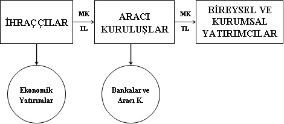
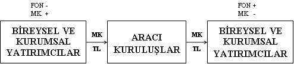

PİYASA
• “Piyasalar güne tedirgin başladı.”
• “Hızlı bir yükselişin ardından piyasalar hız kesti.”
• “Piyasalar yaklaşan bilmem ne seçimi öncesi gergin.”
• “Yatay bantta hareket eden piyasalar, yönünü arıyor.”
• “Piyasalardaki tedirgin bekleyiş sürüyor.”
• ...
İyi, güzel de... Kimdir kardeşim bu “piyasa”? Anladığımız kadarıyla “etten kemikten, sizin bizim gibi” bir arkadaş. Baksanıza güne tedirgin başlıyor, geriliyor, umutlanıyor, durup düşünüyor. Evet evet “sizin bizim gibi”...
Piyasa nedir? Hiç düşündünüz mü? Genel olarak işlem yapanların tümü olarak algılanır; siz, ben ve diğerlerinin tümü.
Aslında piyasa kavramı şişirilmiş bir kavramdır. Finans çevreleri tarafından abartılmış, ekonomi ve finans âleminin yarı Tanrısı hâline getirilmiştir. Piyasa ne yapıyorsa doğrudur, o hep haklıdır. Bu abartılmış kavramın özü, aslında binlerce yıllık bir temele dayanır: “Pazar”.
Evet şu bildiğimiz semt pazarı. Hani haftanın belli bir gününde sizin mahalleye gelen ya da sizin onun mahallesine gittiğiniz ya da biraz daha havalısı: Salı pazarı, sosyete pazarı filan. Ama mantık hep aynıdır: Birileri pazardan mal almaya gelir, birileri ise satmaya... Karşılaşırlar ve başlarlar pazarlık yapmaya ve her iki taraf da alışverişe niyetliyse illaki bir fiyatta anlaşırlar.
ARZ VE TALEP
Hanımlara daha yakın gelecek bir sahne hatırlayalım pazardan. Sosyete pazarına gidersiniz ve bir bluz tezgâhının önünde kendinizi kaybetmiş bir şekilde, bedeninize uygun mavi bluzu ararsınız. Mavisi vardır; ama bedeni olmaz. Bedeni olur; ama rengi tutmaz. Ararsınız, ararsınız, derken... İşte aradığınız bluz orada!
Bluz, diğer hain bluzların arasından itinayla çekilip alınır ve umutsuzca o standart soru sorulur: “Bu en son kaça olur?”. Olmaz ki; o bluzun son fiyatıdır zaten. 15 dakika, ısrarla aradığınızı görmedi mi pazarcı kardeşimiz. “Abla zararına satıyoruz, olurunu söyledim.” Malum, tüm pazarcılar, amme hizmeti yaparlar ve hep böyle malları zararına satarlar.
Oysa ki hikâye şöyle olsaydı:
Bir arkadaşınız sizi zorla pazara götürmüştür (sanırım bir beyefendiyle konuşuyorum, zira bir hanımefendi zorla pazara gider mi, bilemedim). Bir şey alma niyetinde değilsiniz (evet kesinlikle bir beyefendi). Tezgâhlara göz ucu ile bakıyorsunuz ve fazlaca yaklaşmıyorsunuz bile. Yakınında durduğunuz tezgâhtaki pazarcı arkadaşın işleri de kesatsa pası atar: “Hocam yeni geldi bunlar. İthal ve çok da kaliteli. Gel bir şeyler yaparız”. Gönülsüzce o tarafa bakarken ve henüz hareketlenmemişken bile fiyat düşmeye başlar: “Uygun bir şeyler yaparız abime!”. E, tabii yıllardır tanışıyoruz ya, yapacak kerata! Neyse, fiyat kendiliğinden düşmeye başladı bile.
Pazar da, piyasa da budur. Ekonominin en temel kuralının işlediği yerdir: Arz ve talep karşılaşır ve pazarlığı yapılan malın fiyatı belirlenir. Eğer herkes bluz satmaya çalışırsa fiyatlar düşer; alıcı çok daha fazla ise fiyatlar artar. Bu bluz için de geçerlidir, domates için de, döviz için de, hisse senedi için de...
O hâlde piyasa aslında bir pazardır ve katılımcıların arz ve talepleri sonucunda mal ve hizmetlerin fiyatları belirlenir. Konuştuğumuz mal eğer döviz ya da hazine bonosu gibi finansal bir ürün ise tanım finansal piyasa hâline gelir ve arz ve talebe göre finansal araçların fiyatı olan kur ve faiz oluşur.
PİYASAYI OLUŞTURANLAR
Yukarıdaki semt pazarı hikâyesini finansal piyasa hâline getirdikten sonra, onu oluşturan unsurları tanımlamakta yarar var.
Finansal piyasayı oluşturan en önemli iki unsur paraya (fona) ihtiyacı olanlar ve bunu sağlayanlar olacaktır. O hâlde ilk iki unsur şunlardır:
• Fon arz edenler (tasarruf sahipleri)
• Fon talep edenler (iş yapmak için kaynak ihtiyacı olanlar, girişimci ve yatırımcılar)
Bu iki tarafın bir araya gelmesi dertleri çözecek gibi görünür; ama sorun tarafların bir araya gelmesidir aslında. Paraya ihtiyaç duyan girişimciler her daim mevcuttur. Birileri de (siz olmasanız da) parasını tasarruf etmiş ve onu bir gelir elde edecek biçimde değerlendirmek istemektedir. Ancak bu iki tarafı bir araya getirecek bir oyuncuya ihtiyaç vardır: banka, aracı kurum, sigorta şirketi, leasing, faktoring, tefeci...Yani:
• Finansal aracılar
Tarafları bir araya getiren finansal aracıların varlığı önemlidir. Bu aracılar, fonun akışına aracılık ederler. Fonu alan taraf, karşılığında borcu olduğuna dair ya da karşı tarafı kendi şirketine ortak olarak kabul ettiğine dair bir belge vermelidir. Kısacası “Evet, ben, senden şu parayı, şu şekilde aldım” demezseniz kimse size para vermez. Bunlar bono, çek gibi ödeme araçlarından daha gelişmiş olmalı ve yatırım amaçlı olarak da kullanılmalıdır. Yani:
• Yatırım ve finansman araçları (menkul kıymetler)
Taraflar mevcut. Onları bir araya getirecek aracılar ve fonun transferini belgeleyecek yatırım ve finansman araçları da tamam. Tamam olmasına tamam da kim denetleyecek bu adamları? Ya birbirimizi kandırmaya çalışırsak? O hâlde ağabeyler de lazım: SPK, BDDK, TCMB, vs. :
• Hukuki ve idari düzen
Sonunda sağlıklı bir finansal piyasanın işlemesi için gerekli olan unsurlar tamamlandı.
• Fon arz edenler (tasarruf sahipleri)
• Fon talep edenler (iş yapmak için kaynak ihtiyacı olanlar, girişimci ve yatırımcılar)
• Finansal aracılar
• Yatırım ve finansman araçları (menkul kıymetler)
• Hukuki ve idari düzen
MENKUL KIYMETLER
Bahsi geçen unsurlar arasında altı çizilmesi gereken kalem “yatırım ve finansman araçları”dır. Fonun el değiştirmesine karşılık olarak verilen ve karşı tarafa borçlu olduğunuzu gösteren ya da karşı tarafın artık size ortak olduğunu belgeleyen değerli bir kâğıttır sözü edilen. Bu değerli kâğıt “menkul kıymet” olarak adlandırılır.
Ülkemizde menkul kıymetler ve diğer sermaye piyasası araçları ile ilgili olarak düzenlemeleri yapan kurum Sermaye Piyasası Kurumu (SPK), uygulayıcısı olduğu düzenleyici yasa ise Sermaye Piyasası Kanunu’dur.
SPK’nın yapmış olduğu tanımı parçalara ayırırsak menkul kıymet:
• Borç-alacak ya da ortaklık ilişkisi ifade eden,
• dönemsel getiri sağlayan,
• nispi (misli) olan,
• yatırım aracı olma özelliği taşıyan,
• seriler hâlinde çıkarılan,
• diğer şartları SPK tarafından saptanan
değerli kâğıttır.
Mevzuatta bu tanıma uyan onlarca yatırım aracı bulunabilir; ama gerçek hayatta biraz zor. Geçmişte ülkemizde ihraç edilen ve işlem gören Gelir Ortaklığı Senedi (GOS),Varlığa Dayalı Menkul Kıymet (VDMK) gibi araçlar günümüzde pek ortalıkta görünmüyor. Bugün için ülkemizde ihraç edilen ve işlem gören menkul kıymet çeşidi oldukça az.
Buna göre tanımın ilk maddesi içindeki “borç-alacak” ilişkisi ifade eden menkul kıymet olarak karşımıza tahvil ve bono çıkıyor. Tahvil ya da bonoyu ihraç eden (satan) şirket ya da devlet, bu kâğıtların karşısında belli bir vadede belli bir getiri sağlamayı taahhüt ediyor ve borç buluyor. Borç veren ise (fon arz eden) parasından belli bir süre ayrı kalmanın karşılığında belli bir getiri talep ediyor. Dolayısıyla tahvil ve bonolar borç-alacak ilişkisi ifade eden menkul kıymetlerdir.
Yine ilk maddedeki “ortaklık” ilişkisi ifade eden menkul kıymet olarak ise elimizde “hisse senedi” var. Bir işletmenin hisse senetlerini satın aldığınızda onun belli bir oranda ortağı olur ve her türlü ortaklık hakkından –etinden, sütünden, pardon kâr payından– yararlanma hakkına sahip olursunuz.
Elinizde hisse senediniz varsa belli dönemlerde hisselerine sahip olduğunuz işletmeden kâr payı (temettü) elde etmeyi umarsınız. Eğer elinizde tahvil ya da bono varsa, zaten belli dönemlerde belli getiriyi beklersiniz. İkinci maddedeki “dönemsel getiri” budur.
Menkul kıymetlerin nispi ya da misli olması kavramı ise, bu kıymetlerden eş değer olan her bir payın diğeriyle aynı özelliklere sahip olduğunu belirtir. Buna göre elinizde bir adet Erdemir hisse senedi varsa işletmenin, örneğin yüz milyonda birine sahipsinizdir. Bir hisse daha satın alırsanız ortaklık payınız yüz milyonda iki olacaktır. Bu da iki katı oy hakkı, iki katı kâr payı hakkı demektir.
Menkul kıymetler çek, senet gibi birer ödeme aracı değildir ve tasarrufları değerlendirmek, yani “yatırım” amacıyla el değiştirirler. El değiştirme esnasında takip, sahteciliği önlemek, saklama, teminat ve takas işlemlerini kolaylaştırmak için tüm kıymetli evraklar gibi “seri numarası” taşırlar.
Son maddede de “diğer şartları SPK tarafından saptanır” cümlesiyle SPK diyor ki: “Bunlar dışında unuttuğumuz ya da şu an aklımıza gelmeyen bir şey varsa, biz, onu daha sonra arkadaşlarla aramızda hallederiz”.
PİYASALAR VE VADELER
Arz ve talebin karşılaştığı ve paranın el değiştirdiği bir pazarda, üzerinde uzlaşılması gereken üç değişken olmalıdır:
• Miktar
• Faiz
• Vade
Bu değişkenlerden “miktar” gözümüzü hiç korkutmaz. Çünkü para transferinin bu kadar hızlı olduğu ve gelir adaletinin bu kadar bozuk olduğu bir dünyada bir yerlerde hep “çok” para vardır. Paraya ihtiyaç duyan tarafın (talep sahibi) bunun bedelini (faizini) ödemeyi kabul etmesi ve karşı tarafta güven uyandırması (gerekli teminatı verebilmesi) durumunda o para dünyanın bir yerinden bulunur ve gelir.
Borç alışverişi esnasında oluşacak olan faiz, elbette işlemin tarafları açısından çok önemlidir. Ancak oranın ne olacağını, eğer etkin bir piyasa varsa, yine arz talep belirleyecektir. Dolayısıyla “faiz” değişkeni son derece önemlidir, ancak etkin bir piyasada oluşması kolaydır.
Geriye “vade” kalıyor. İlk bakışta en kolay değişken gibi görünse de kesinlikle öyle değildir. Bir haftalık bir borçlanma için para miktarı, teminatı ve faizi üzerinde anlaştıktan sonra size, “Vadeyi biraz uzatsak, şöyle 3 yıl kadar mesela” desem tepkiniz ne olurdu? (Yok canım!)
Elbette her üç değişken de önemli ama, aslında arz ve talebin ilk aşamada karşılaşıp karşılaşmayacağını belirleyen değişken “vade”dir. Buna göre finansal piyasaları el değiştiren yatırım araçlarının özelliklerine, faiz oranlarına, miktarlarına göre değil, vadelerine göre ikiye ayırırız:
• 1 yıldan kısa vadeli fon arz talebinin karşılaştığı piyasalara para piyasası,
• 1 yıldan uzun vadeli fon arz talebinin karşılaştığı piyasalara sermaye piyasası
denir.
Yukarıdaki piyasalar, genellikle kısa vadeli olarak, yabancı bir para birimi üzerinden arz ve talebi karşılaştırıyorlarsa bu sefer de karşımıza döviz piyasası çıkar.
BİRİNCİ EL VE İKİNCİ EL PİYASA
Otomobili bayiden aldığınızda sizindir. İlk kez siz kullanırsınız, sizden önce bir sahibi yoktur. “Sıfır aldım” diye hava atarsınız tanıdıklara. Bu birinci el (birincil) piyasadır. Bir süre kullandıktan sonra ihtiyaçtan ya da yenisiyle değiştirmek için onu bir başkasına satarsınız. Onu alan da belki başkasına satar. Bu artık ikinci el (ikincil) piyasadır.
Menkul kıymetler için de bu tanımlar geçerlidir. Bu kıymetleri ilk kez ihraç edenden (çıkaran, satan) satın almışsanız bu birinci el (birincil) piyasadır. Bu kıymetleri elinizde tutmak yerine başka bir yatırımcıya satarsanız bu da ikinci el (ikincil) piyasadır.

Konuştuğumuz kıymet, özel kesim ya da devlet tarafından çıkarılmış bir borçlanma senediyse (tahvil ve bono), birincil piyasayı takip eden ikincil piyasa sonsuza kadar süremez. İkincil piyasa, en çok tahvil ya da bononun vadesine dek sürer. Vadesi geldiğinde ihraççı bonoyu geri alır ve karşılığını öder, ikincil piyasa da burada böyle biter.
Eğer ortaklık ilişkisi ifade eden bir menkul kıymetten –örneğin hisse senedinden– bahsediyorsak, hisse senedinin yatırımcılar arasında el değiştireceği ikincil piyasa için bir vade yoktur. Hisseleri işlem gören şirket, varlığını sürdürdüğü sürece, bu kıymetler için ikincil piyasa da var olmaya devam edecektir. Amerikan Borsası (ikincil piyasa) ve bazı eski Avrupa borsalarında yüz küsur yıllık şirket hisselerinin işlem gördüğünü söyleyebiliriz.

Peki ya hisselerine sahip olduğunuz şirket batarsa? İşte o zaman elinizdeki hisseler, en iyi ihtimalle duvar kâğıdı olur. Farklı alternatifleri hayal gücünüze bırakıyoruz.
Borsada, hayatında hiç işlem yapmamış ya da bir kez alım yapıp hayatının zararına uğramış yatırımcıların gözünde “borsa bir kumardır”. “Bugün borsa % 2 düşse ya da çıksa, bu durumun ekonomiye hiçbir etkisi olmayacaktır. O hâlde, borsa (ikincil piyasa) olmasa da olur!” İlk bakışta mantıklı görünen bu yaklaşımın ardındaki tehlike iki soruyla kolayca anlaşılacaktır:
1. Hisse senedi birincil piyasası (halka arzlar) ekonomiye kaynak sağlar mı?
--› Evet
2. Hisse senedi ikincil piyasası (borsa) olmasa, başkasına kolaylıkla satamayacağınızı bile bile birincil piyasadan (halka arzdan) hisse senedi alır mısınız?
--› Hayır
O hâlde yanıt açıktır: İkincil piyasa (borsa, piyasa) olmasa birincil piyasa olamayacaktır. Buna göre ikincil piyasa, birincil piyasanın devamlılığını sağlamaktadır.
ORGANİZE VE ORGANİZE OLMAYAN PİYASALAR
İkincil piyasalardan bahsederken bir detayı atlamamakta fayda var: İşleyiş kuralları.
Bazı piyasalarda tüm yetkili (piyasaya katılmaya izinli) alıcılar ve satıcılar karşılaşabilirler. Bu karşılaşma belli bir fiziki mekân ya da sanal platform üzerinde gerçekleşebilir. Herkes diğerinin teklifini görebilir ve tüm işlemlerden haberdardır. Sistemi gözetleyen ve denetleyen birileri vardır ve işlemler belirli saatlerde ve belirli kurallara göre yapılabilir. Bu organize piyasa, yani borsadır.
Oysa diğer bazı piyasalarda, herkes birbiriyle karşılaşmaz, tüm işlemlerden haberdar olunmaz ve aynı mal için aynı anda farklı fiyatlar oluşabilir. Sistemi denetleyen ve gözetleyen olsa bile, kurallar diğerine göre daha gevşektir. Bu da organize olmayan yani tezgâhüstü piyasadır.
Buna göre büyük şehirlerde, kooperatif üyesi çiçekçilerin sabah erken saatte bir araya gelerek şehir dışından gelen çiçekleri açık artırma yoluyla satın aldıkları çiçek mezatları (pazarları) birer organize piyasa iken, sizin eşinize çiçek almak için girdiğiniz (“O ne ola ki?” demeyiniz lütfen) çiçekçideki alışveriş, tezgâhüstü piyasada gerçekleşmektedir.
Benzer biçimde İMKB’den alınan hisse senedi ya da tahvil ve bonolar organize piyasada gerçekleşmekteyken, bir bankadan satın aldığınız tahvil ve bono ise tezgâhüstü piyasada işlem görmüş olacaktır.
O hâlde...
Sonuçta, mantık olarak havalı bir semt pazarından pek de farklı olmayan finansal piyasa kavramını ortaya koyduk. Arz ve talebin karşılaşmasıyla finansal piyasalarda fiyat ve faizin oluştuğunu, ancak piyasanın oluşabilmesi için bazı unsurların gerekli olduğunu saptadık:
• Fon arz edenler (tasarruf sahipleri)
• Fon talep edenler (iş yapmak için kaynak ihtiyacı olanlar, girişimci ve yatırımcılar)
• Finansal aracılar
• Yatırım ve finansman araçları (menkul kıymetler)
• Hukuki ve idari düzen
Piyasaların vadelerine göre para ve sermaye piyasaları olarak ikiye ayrıldığını ve her ikisinin de ilk ihraç ya da ihraç sonrası el değiştirme piyasası olmalarına göre birinci el ve ikinci el piyasalara bölündüklerini belirttik. İkincil piyasalar, birincil piyasaların devamlılığını sağlıyorlar ve işleyiş biçimlerine göre organize ve organize olmayan (tezgâhüstü) biçiminde ikiye ayrılıyorlardı.